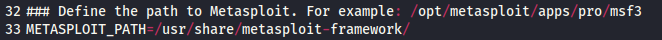
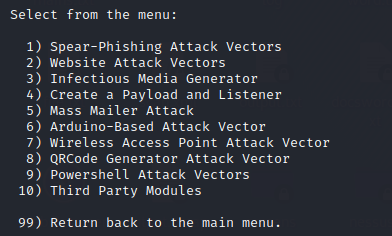

Social Engineering Toolkit (SET)
Social Engineer Toolkit (SET)
Site:
https://github.com/trustedsec/social-engineer-toolkitWe
can find the manual here:
https://github.com/trustedsec/social-engineer-toolkit/blob/master/readme/User_Manual.pdfInstallation:
cd /home/kali/bin
git clone https://github.com/trustedsec/social-engineer-toolkit
cd social-engineer-toolkit/
python3 setup.py #to install the requirements
Edit the configuration file
gedit /home/kali/bin/social-engineer-toolkit/src/core/config.baseline
We have to set the variable METASPLOIT to where metasploit is located in our case
/usr/share/metasploit-framework/Run it
cd /home/kali/bin/social-engineer-toolkit/
setoolkit
We can acquire more
information about each attack vector by simply selecting it